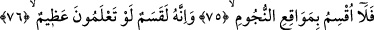
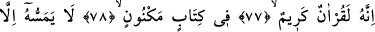
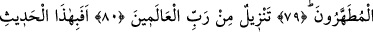
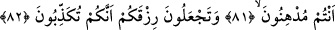
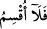

O,
ÂLEMLERİN RABBİNDEN
İNDİRİLMİŞTİR
75. Hayır! Yıldızların yerlerine yemin ederim ki,
76. Bilirseniz, gerçekten bu, büyük bir yemindir.
77. Şüphesiz bu, değerli bir Kur’an’dır.
78. Korunmuş bir kitapta bulunmaktadır.
79. Ona ancak temizlenenler dokunabilir.
80. O, âlemlerin Rabbinden indirilmiştir.
81. Şimdi siz, bu sözü mü küçümsüyorsunuz?
82. Allah’ın verdiği rızka karşı şükrü, onu yalanlamakla mı yerine
getiriyorsunuz?
“Uksimü/yemin ederim” kelimesinin başındaki olumsuzluk edâtı “Lâ”:“Böylece kitap
ehli, Allah’ın lutfundan hiç bir şey elde edemiyeceklerini bilsinler” (el-Hadid
57/29) âyet-i kerîmesinde olduğu gibi mânâyı pekiştirmek ve sözü güçlendirmek içindir,
olumsuzluk için değildir. (felâ uksimü) ifâdesinin “yemin etmem” mânâsında olduğunu, çünkü bu gibi
yerlerde yemine özellikle de böyle büyük bir yemine gerek kalmayacak kadar durumun
açık olduğunu söyleyenlerin görüşü uygun değildir. Çünkü, burada üzerine yemin edilen
varlığın belirlenip üstelik önemine vurgu yapılmış olması, böyle bir mânânın
anlaşılmasına engeldir.
Âyet-i kerîmede geçen “yıldızların yerlerine” yâni yıldızların düştükleri yerlere ki,
bu yerler onların battıkları noktalardır. Bu batış noktalarının yemine tahsîs edilmesi,
batışlarında izlerinin silinmesinden ve onların var olup yok olmasında hiç değişmeyen
ebedî bir müessirin, bir var edicinin bulunduğunu göstermesindendir. Veya bu vakit gece
teheccüde kalkanların bu namazı kıldıkları, yalvarıp yakaranların Allah Teâlâ’ya
yalvardıkları ve onların üzerine Allah Teâlâ’nın rahmetinin indiği zamanlardır.
“Yıldızların yerleri”nden maksad onların yerleri ve yörüngeleri demektir. Bunlarda